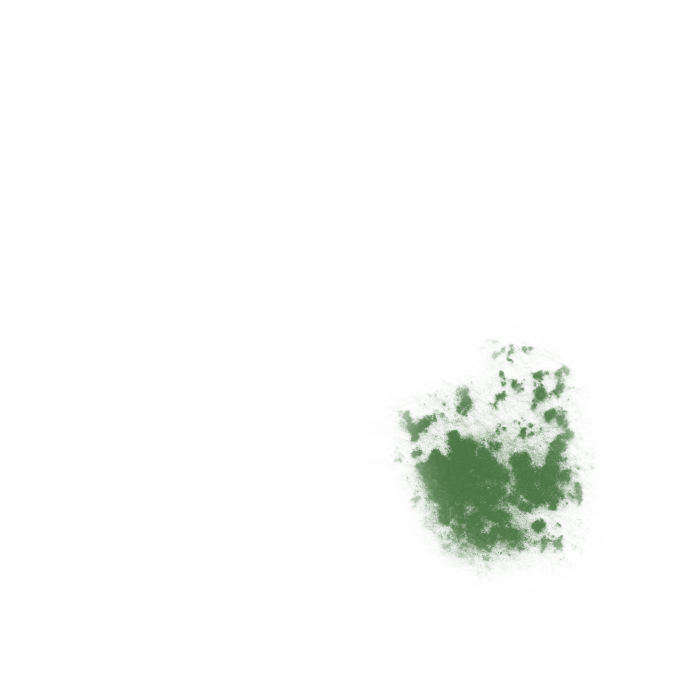

Phytoplankton are freely flowing microscopic organisms that live in both fresh and saltwater environments.
Like plants on land, phytoplankton consume carbon dioxide and release oxygen. They have chlorophyll which allows them to use energy from the sun through photosynthesis. Due to this, phytoplankton live in the well-lit surface areas of oceans and lakes.
Nearly all sea organisms consume oceanic phytoplankton, whether directly or indirectly.
With the right conditions, phytoplankton can multiply very fast, leading to a phenomenon called a bloom. Some species of phytoplankton produce harmful biotoxins - their blooms are toxic and can kill marine life and people who eat seafood that has been contaminated.
Even non-toxic phytoplankton can cause harm through mass accumulation - a bloom can prevent sunlight from reaching submerged vegetation, cause oxygen depletion or disrupt food-web dynamics.
Sources:
